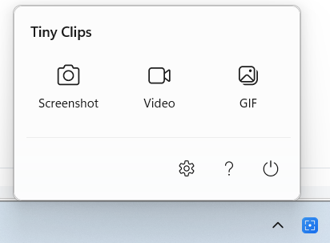
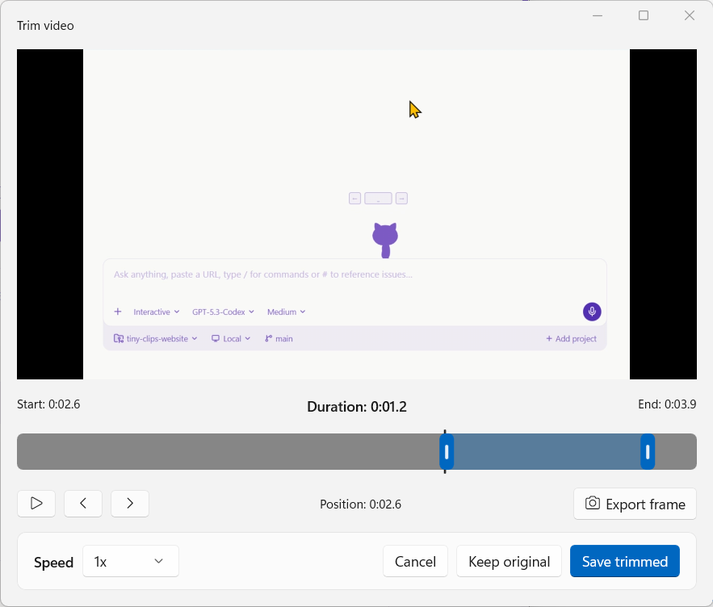

Native on both desktops
Made for Windows and macOS, with the capture tools close at hand.
Tiny Clips 2.0 Studio Preview
Mark up a screenshot that explains itself, record without the setup, and shape recordings into a clear demo in Studio.
Illustrative mockup of the screenshot editor · Windows layoutMac layout. See real screens.
Studio is on by default in 2.0 preview builds unless previously disabled. Saved opt-outs stay off. The Welcome Back screen appears once; Video remains a standard recording.
One flow, from capture to finished demo
Made for Windows and macOS, with the capture tools close at hand.
Captures and Studio projects stay on your device. Share only when you choose.
Arrange screen and camera layers, refine the look, trim, and export an MP4 in Studio.
Studio is a preview and is on by default in Tiny Clips 2.0 preview builds unless previously disabled. Availability varies by platform.
Capture screenshots, recordings, and GIFs. Polish what matters. Keep your flow, on Windows and Mac.
Pick a region and go. Add your microphone and system audio, a webcam bubble, click highlights, and a teleprompter that never shows up in the recording.
Press the shortcut, then R, S, or W for a region, screen, or window. Every shortcut is rebindable.
Record a GIF, then trim with range handles, speed presets, and frame stepping.
Select any region and copy its text with built-in OCR. No retyping from screenshots.
Capture a long page or chat and Tiny Clips stitches it into one tall image.
Search every capture, filter by type, star favorites, and organize with tags and collections. Copy or reveal a clip without digging through folders.
Mockups are simplified illustrations. See real screens.
The store is the fastest, safest way in: one click, signed by the platform, and updates arrive on their own. Terminal and direct installs stay a tap away for power users.
Recommended
Signed by Microsoft, installs in one click, and updates automatically. Works on Windows 11 x64 and ARM64. Nothing to configure — Tiny Clips appears in your system tray, ready to capture.
For terminal-first setups and scripts. Same signed package, installed from the winget community repo.
winget install Refractored.TinyClips
winget upgrade Refractored.TinyClips
Signed MSIX packages for x64 and ARM64 with full release notes. Tiny Clips checks GitHub for updates and guides you through upgrading.
Latest Windows releaseRecommended
Notarized, sandboxed, and updated by the App Store. Includes Clips Manager — tags, collections, notes, favorites, and batch actions for every capture — at no cost.
Reproducible installs from the Tiny Clips tap. The brew trust line is only needed on Homebrew versions that require it and safely no-ops elsewhere.
brew tap jamesmontemagno/tiny-clips https://github.com/jamesmontemagno/tiny-clips
brew trust jamesmontemagno/tiny-clips 2>/dev/null || true
brew install --cask tiny-clips
Try pre-release builds through TestFlight, or grab the latest signed, Sparkle-updating build from GitHub Releases.
This is a working simulation of the app on a tiny desktop. Click the Tiny Clips icon, pick a capture type, drag a region, then annotate a screenshot or trim a recording — exactly the loop you get on your own machine.
Everything in the demo mirrors a real Tiny Clips feature. Nothing is uploaded and nothing leaves this page. On small screens, scroll the desktop sideways to reach the tray and app controls.
Tiny Clips stays out of your way until you need it, then gives screenshots, recordings, and GIFs exactly the tools they need before they leave your desktop.
Pick a target in one keystroke and Tiny Clips takes care of the rest.
Hardware-accelerated MP4 and GIF recording with the audio and overlays creators actually use.
A real editor and real trimmers open the instant a capture finishes — no extra app required.
Find what you captured last week without digging through folders.
Record now. Choose the look afterward. Studio is a preview for macOS and Windows that is on by default unless you previously turned it off. It keeps your screen and optional camera as separate editable layers, rather than baking them into one video.
The refreshed Tiny Clips 2.0 Welcome Back screen appears once. Your saved opt-out stays off, and the existing Video command always uses the regular recording workflow. How to try the preview.
Learn more — watch the videoEvery capture is a chord away, and every chord is rebindable in Settings. Windows uses Ctrl+Shift; Mac uses Control+Option+Command so it never collides with the system screenshot keys.
| Action | Windows | macOS |
|---|---|---|
| Screenshot | CtrlShift5 | ⌃⌥⌘5 |
| Record video | CtrlShift6 | ⌃⌥⌘6 |
| Record GIF | CtrlShift7 | ⌃⌥⌘7 |
| Copy text (OCR) | CtrlShiftT | Picker → Recognize Text |
| Screenshot region / window | Optional, set in Settings | ⌃⌥⌘1 / 2 |
| Picker: region / screen / window / scroll | R S W P | R S W |
| Stop recording | CtrlShiftS | ⌘. |
Screens from the shipping apps. Select any image to enlarge it.




Capture, trim, and share — the way it happens on a real desk.
Captures are saved to folders you choose. No account, no telemetry, no cloud unless you connect your own Uploadcare.
Around 4 MB on Mac and 21 MB on Windows. Starts in the tray or menu bar and stays idle until you call it.
MIT licensed on GitHub. Read the code, file a bug straight from the app, or build it yourself.
Keyboard-first flows, Narrator and VoiceOver announcements, and a documented accessibility gate before every Windows release.
Anything else? Open an issue on GitHub or use File a Bug inside the app.
Open the Microsoft Store listing and click Install. The Store keeps Tiny Clips updated for you. Prefer a terminal? Run winget install Refractored.TinyClips. Signed MSIX packages are also on GitHub Releases.
Use the Mac App Store for automatic updates and Clips Manager. Homebrew users can tap jamesmontemagno/tiny-clips and brew install --cask tiny-clips. TestFlight and direct GitHub downloads are available too.
Yes. Every feature is included on both platforms with no account, subscription, or paid unlock. On macOS you can optionally leave a tip; supporters get a small badge in Settings and nothing else changes.
No. There is no telemetry or analytics service. Capture statistics in Settings → Analytics are stored only on your device. Uploads happen only if you connect your own Uploadcare account. Read the privacy policy.
Windows and macOS prompt for screen capture the first time you record. Microphone and camera are requested only when you turn those options on for a recording, and you can revoke them any time in system settings.
Screenshots save as PNG (JPEG and scale options on Windows). Video is hardware-accelerated H.264 MP4 at 24, 30, or 60 fps with optional microphone and system audio. GIFs support 5–30 fps and a configurable maximum width.
Studio is a work-in-progress preview for macOS and Windows, not part of the current store releases. Build Tiny Clips from the main branch and check the Studio preview notes for current limitations.
In that build, Studio is on by default unless you previously turned it off in Settings → Studio. The refreshed Tiny Clips 2.0 Welcome Back screen appears once. On macOS, choose Studio Recording… from the menu bar menu. On Windows, choose the Studio tile in the tray menu. Record, then arrange your layers in Studio and export an MP4.
If you do not want Studio, turn off Tiny Clips Studio (Preview) in Settings → Studio; saved opt-outs stay off. The existing Video command still uses the regular recording workflow.
Windows 11 22H2 or later on x64 and ARM64, and macOS 15 Sequoia or later. Both builds are native: WinUI 3 on Windows and Swift with ScreenCaptureKit on Mac.
Free on both stores. Installs in seconds, then waits quietly in your tray or menu bar.